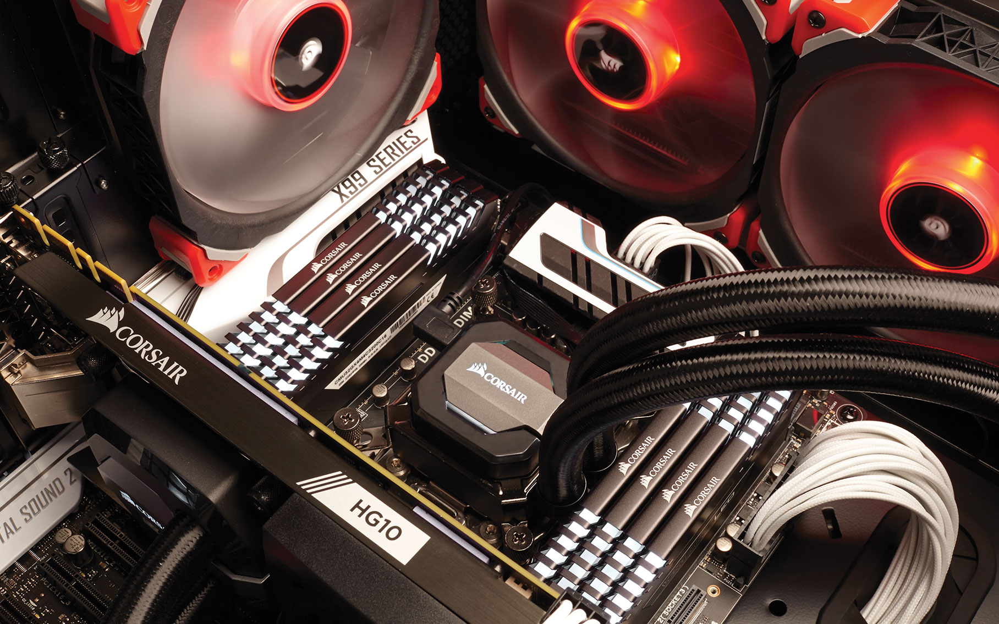

Memorijska Hijerarhija
Veliki sam fan računala, pa tako i svih komponenti unutar njega. Nekako uvijek volim ići i gurati svoj PC do limita i granica rušenja sistema. RAM maksimalno overclockirati, RAID 0 polja sa dva 250GB M.2 Samsung SSD, te naravno posjedujem i jedan 10TB HDD od Seagate-a. Volim imati brzo računalo i brzo pristupiti podatcima kada god to želim. Također koristim i USB Type C tehnologiju na svom smartphoneu. Mnogo ljudi sve nove tehnologije zanemaruje jer nemaju nekakvo značajno ime, no svakih par mjeseci se izumi nešto fenomenalno, a mi to neznamo. Namjerno sam izostavio diskete, CD i DVD, jer su za mene oni stvar prošlosti. Da, mogu imati jos koje važne slike na nekim od tih drive-ova, no više se ni kućišta ne proizvode sa mogućnošću ugradnje otpičkih uređaja, a da ne spomenem kako su spori naspram današnjih tehnologija. Idemo jako brzo naprijed, nadmašujući sami sebe, pa tako i ja želim nadmašit samoga sebe. To bi trebao biti cilj svima.
